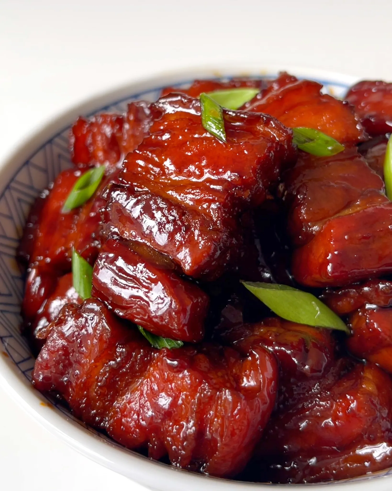

Chinese Pork Stew

Description
Hong Shao Rou (红烧肉) is a popular Shanghainese dish. The literal translation of the dish is red braised pork. It's stewed and cooked in soy sauce and sugar, which gives the sauce a glossy caramelized finish.
Ingredients
- 500g pork belly, cut into approximately 3cm cubes
- 1 tbsp neutral oil
- 20g rock sugar or 2 tbsp sugar
- 2 tbsp light soy sauce
- 2 tbsp dark soy sauce
- ¼ cup Shaoxing wine
- 600mL water
- 3 slices of ginger
- 2 star anise pods
- 1 tangerine peel (fresh or dry. Any citrus peel will work!)
- 1 tbsp chili oil
- Green onions for garnish
Directions
-
Blanch the pork belly. In a pot of boiling water, gently drop the pork belly cubes in. Blanch for 3-4 minutes until the scum rises to the top. This ensures that the impurities won’t be in our final sauce.
-
Rinse your pork chunks for any impurities. Drain and tab excess moisture with a tea towel.
-
Heat a heavy duty pot (like a dutch oven or large cast iron with a lid) on medium high heat.
- Drizzle in the oil and add the pork.
- Sear the pork on all sides and add the sugar and soy sauce in.
-
Once the sugar has caramelized and coated the pork, deglaze the pot with Shaoxing wine and water.
- Add the ginger, citrus peel, and star anise.
-
Cover and lower the heat to low. Simmer for 1 hour until the pork is tender. Supplement with more water if the sauce seems too thick / might burn. Alternatively, you can cook this in an instant pot or pressure cooker with 300mL of water for 20 minutes on high pressure.
-
Serve on top of rice. Drizzle the glaze on the rice first and plate a generous mountain of pork belly! Garnish with scallions and enjoy!